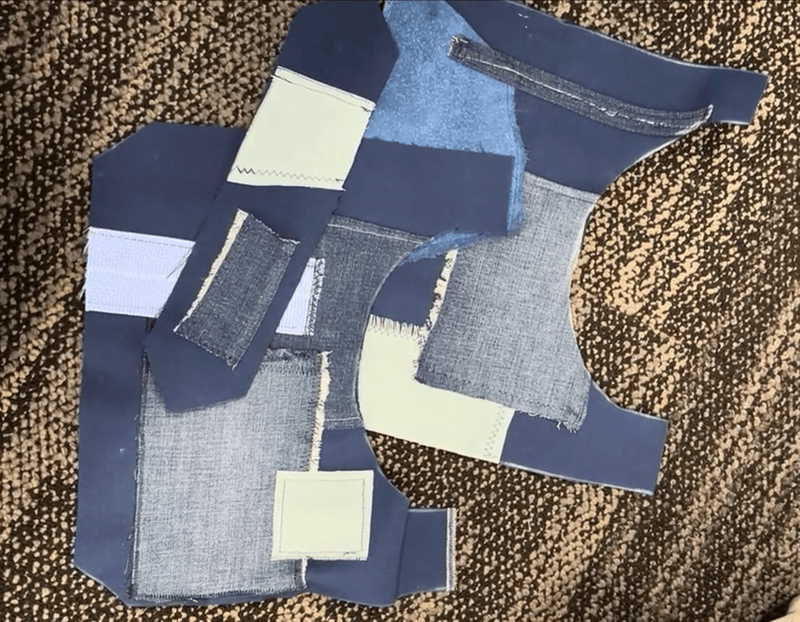

Utilizing Scraps as a Creative Challenge
Date: April 14, 2025
This bag was made super on the fly. I was at Purdue’s Knowledge Lab (where I do all of my sewing these days), just looking through their bins of fabric when a nice thick piece of navy blue fabric caught my eye. Not too much fabric, just enough to make a small bag. I scoured the other bins for blue scrap fabric, pulling any blue fabric I saw out. Then, looking at the fabric I had lying in a pile on the floor, I decided to create a small patchwork style handbag. Now luckily, bag patterns are pretty simple to make- the patterns mostly work like how boxes do. So I quickly whipped up a handbag pattern, and got to sewing. I cut out the two faces of the bag, sewing on the scraps in a random fashion, trying to arrange them in a way that would be the most visually appealing. I did not worry about fabric fraying for this project, and in fact used it to my advantage. Some patches I rolled the hems of while others I did not, amplifying that patchwork look. In the end, I think I achieved a pretty cool result.
